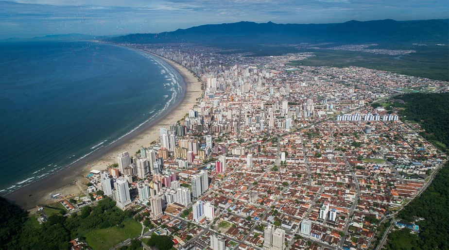
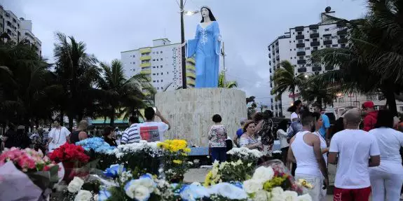
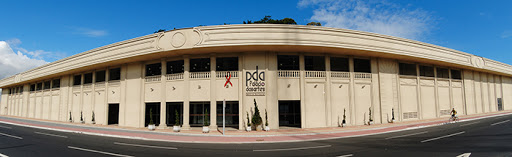

A cidade de Praia Grande tem uma das praias mais movimentadas do Brasil, tendo sido eleita pelo Ministério do Turismo como a quarta cidade que mais recebe turistas no país durante a temporada de verão, depois de São Paulo, Rio de Janeiro e Florianópolis. Na alta temporada recebe cerca de 1,86 milhão de turistas (mais de cinco vezes a sua população fixa). A cidade também teve uma rápida expansão, com crescimento de 56 000 habitantes entre 2000 e 2009, recebendo, em 2015, o título de "a cidade que mais cresce no Brasil".Sua população estimada para 1.º de julho de 2019 era de 325 073 habitantes.

Os tradicionais Festejos de Iemanjá de Praia Grande, considerado o maior de todo o estado, iniciam neste fim de semana. Milhares de fiéis e simpatizantes da Rainha do Mar estarão na faixa de areia entre os bairros Mirim e Caiçara para a celebração que ocorre nos dias 30 de novembro, 1, 7 e 8 de dezembro. A cerimônia de abertura ocorre neste sábado, às 20 horas, na faixa de areia em frente à estátua de Iemanjá, no Bairro Mirim.

O complexo cultural de seis mil metros quadrados é um dos mais importantes da região. Sua fachada é neoclássica e, por dentro, o projeto segue o estilo contemporâneo com espaços amplos. O andar térreo abriga um Salão de Eventos, com capacidade para 600 pessoas.
O acesso é central, com recepção e hall expositivo, e tem como destaque o lustre gigante, com doze mil pedras de cristal e 120 lâmpadas, a uma altura de 3,20 metros e com 2,60 metros de largura, compondo formas que remetem à figura do arlequim, personagem da antiga comédia italiana. O lustre faz alusão ao clássico filme O Fantasma da Ópera.
No andar superior, há uma exposição permanente de esculturas. O Complexo Cultural abriga três importantes equipamentos do município: a Galeria Nilton Zanotti, o Museu da Cidade e o Teatro Serafim Gonzalez.